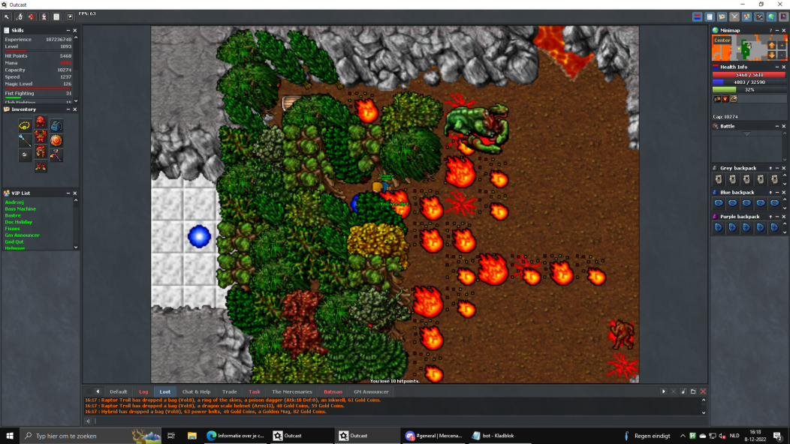
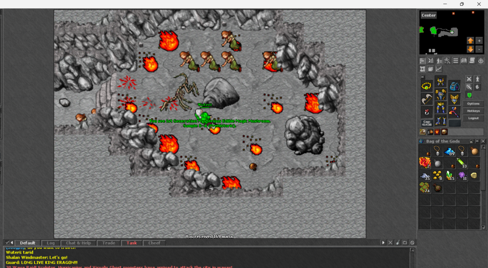
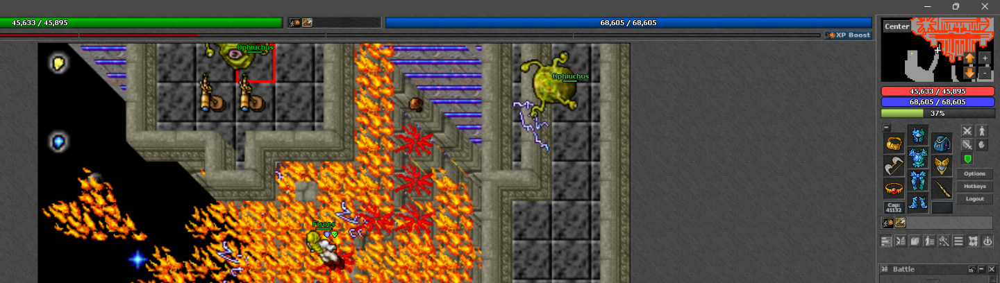

Magic mushrooms of Outcast
Gen 1: 96/100
Gen 2: 49/50
Gen 3: 40/50
Gen 4: 40/50
PRO TIP: Use CTRL + F to navigate easier here
Main city
154-C Depot, main city

153-C Depot, trainers

235-D Depot upstairs

22-A depot -2 football teleport

218-D City teleports

51-A Dragon islands

88-A Dragon islands

56-A Elite lands

4-A Elite lands

87-A Football area

71-A Forgotten islands

102-B Golden boots quest

5-A Jungle, east


12-A Jungle, South

2-A Game hall teleport

92-A Wild warrior cave, West stairs "Old widow library"

91-A Warlock area, Full ectoplasma quest

3-A Tempest shield quest

58-A Tempest shield quest

15-A North of main city, warlock/demon area


53-A North-East area of main city

54-A Spider islands

33-A Somber inferno

147-B Main city area quest

24-A Spider islands

25-A Warlocks area, burning heart quest?

57-A Game hall teleport

245-D main city, East side

211-D Jungle

188-C Main city, North-East area

Aberon
61-A Aberon jungle

13-A Aberon jungle

7-A Aberon jungle

114-B Deeper banuta

26-A Aberon jungle
Adicama
126-B Adicama, Eastern exp doors

6-A Adicama South
.png)
55-A Adicama West
.png)
207-D Adicama city
.png)
237-D Adicama dragons mountain
.png)
Forbidden forest
1-A Forbidden forest North-west corner

67-A Forbidden forest far North

37-A Forbidden forest beginning
38-A Forbidden forest underground
217-D Forbidden forest

Drushak
23-A Drushak, harashaki quest
250-D Drushak demons
.png)
Snowmania
10-A Snowmania, Dark warrior set quest
199-C Snowmania, Dark warrior set quest
Lithgow
9-A Lithgow Left side forest to the South

27-A Soft boots quest area, ending. Mushroom is south-east from teleport

68-A Gem quest area

148-B Lithgow North-west corner

77-A Lithgow South-east corner

86-A Gem quest area
35-A Zenith set quest area
81-A Zenith set quest area

172-C Zenith set quest area

Edron
19-A North side of Edron

201-D Edron boat

60-A Edron North East area

45-A Qutor's grove, Far to the West

170-C Qutor's grove far East
.png)
191-C Qutor's grove
.png)
243-D Edron orcs

66-A Edron orcs
Tarid
8-A Tarid East side nobles, Full HOTA quest area

17-A Tarid, Full HOTA quest black sheeps

101-B Tarid city, middle arena
11-A Tarid orc fortress
.png)
63-A Tarid orc fortress
.png)
98-A Tarid Boots of haste quest on the South-East tower, South from city

202-D Tarid middle mountain
.png)
215-D Tarid Oceanic lizard weapon quest
244-D Tarid far to the East
.png)
62-A Oceanic lizard weapon quest path
31-A Tarid, Deathlands, graveyard at North, bright sword / hota piece quest

112-B Oceanic lizard weapon, house

190-C Tarid boots of haste quest/ black knight village

78-A Tarid city

Valmoor
34-A Valmoor North area trolls

75-A Valmoor city

16-A Valmoor
76-A Valmoor

125-B Valmoor, Batman's house

242-D Valmoor quest
Plains
84-A Fallen gods, right side from bamboo walls, up to from the behemoths

140-B Plains, demons area underground
143-B From magicians creek cp, west side house

82-A Way to Cyclip shield quest, krampus house in the city
.png)
89-A after Evil Limp, that is blocking the stone
90-A Plains area, first city
168-C Plains checkpoint
145-B Plains area at the stone lever area
85-A Magicians creek North-east place

83-A Map of Rose shield area, hidden under a tree
185-C Bullcity
209-D Bullish city
.png)
29-A magicians, Fallen gods
Beluna
46-A Beluna, West side downstairs, where's panda boss

163-C Beluna place after lever hell
241-D Beluna South, demodrases

18-A Beluna ending, 3 surphyres

79-A Beluna hell
151-C Beluna hell

165-C Beluna hell

80-A Sky wep area
124-B Sky weapon area, East from stairs

160-C Sky weapon area, ending

Wrecked ship area
120-B Wrecked ship ending, before rewards
48-A Wrecked ship, with some demons
Mysticon
14-A Mysticon area way to first stone boss, the magician to the West
100-A Mysticon, most Northern part of the island
94-A Mysticon, after long path

36-A Mysticon, East from checkpoint
40-A Mysticon, West side of the last area

70-A Mysticon main area
93-A Mysticon, far to the West
171-C Mysticon, last area. West place, ladders are South

128-B Mysticon, before reward room, south
179-C Mysticon quest area, after serpent boss. West side stairs down and go south-west.
161-C Mysticon. Wizard boss is to the West from here.

247-D Mysticon, after long path

192-C Mysticon first area, East side

Oceanic lizard shield
41-A Oceanic lizard shield area, North-east
Skyrider shield
21-A Skyrider shield city area

72-A Skyrider shield area
96-A Skyrider shield, from cp2 underground the tower

113-B Skyrider shield, second last place
141-B Skyrider shield, last place
195-C Waterfalls checkpoint 2, tower nearby
221-D Skyrider waterfall checkpoint 1

222-D Skyrider waterfalls second last area before teleport to last place
223-D Skyrider waterfall checkpoint 1

Desert of Zenith & Dunes
99-A Desert, West side
49-A Near entrance to Dunes

119-B Mountain of Desert of Zenith

208-D Dunes

Yalahar
149-B Craak tower at Dark mountains

74-A Yalahar Incan empire, North
42-A Yalahar dark mountains, West side stairs down
189-C Yalahar circles, boat to the West

43-A Yalahar inner circles

105-B Yalahar inner circles
44-A Yalahar Chambers

146-B Yalahar inner circles, near downstairs to hybrids
97-A Way to chambers, East side Nobles
226-D Chambers

39-A Yalahar Incan empire, Northern part
20-A Yalahar circles, North

174-C Between Yalahar circles and spaceship under 2 skulls
155-C spaceship stairs, last place
109-B after making 1 of the spaceship quest upgrades
239-D Spaceship upgrade room (Roc head->spacestick)
121-B Spaceship ending

Abysses of Achernar
106-B Abyss 3 after cobra teleport

107-B Abyss 3 after cobra teleport
127-B Abyss 1, colosseum North stair up

73-A Abyss 2 East side of the city
115-B Abyss 2, Northern part upstairs, small house
158-C Abyss 2

225-D Abyss 1 colosseum
228-D Abyss 1 colosseum underground

144-B Spacewalk

227-D Abyss 2

142-B Abyss 2. South house from checkpoint
129-B Spacewalk

164-C Spacewalk end before teleport to Prison

131-B Prison
132-B Prison
136-B Prison

130-B Prison
137-B Prison

138-B prison
157-C Prison hidden under rubbish

248-D Prison

Kingdom Farmlands
175-C Kf 1 checkpoint

65-A Kf 1 East from checkpoint
50-A Kf1, Far to the East

203-D Procyon's lair
123-B Kf 2 Hamsters

118-B Procyon's lair

69-A Procyon's lair
122-B kf3
216-C KF2
238-D Kingdom farmlands 3

184-C Kingdom farmlands 3
177-C kf3 downstairs to the East
116-B Blackhole

59-A Farmpit

234-D Farmpit, procyon/giants

212-D near Farmpits checkpoint 2

Edron bossrun 1-4, red carpet
47-A Bossrun 2 area, near teleport to Zenith

32-A Axxion/endy wand upgrade quest

150-B Axxion labyrinth

95-A Axxion, Panda bear quest

173-C Way to Spaceship key quest
133-B Ebr4 ending
110-B edron bossrun 4

135-B Edron bossrun 4, South house upstairs
111-B Ebr 4 West side

187-C Red carpet underground
159-C Red carpet

240-D Edron bossrun 4
180-C Ebr 4 ending

Edron boss run 5
Unknown number
182-C South from Bossrun 5 checkpoint
181-C On the way to edron bossrun 5

183-C West side of the bigger area in Bossrun 5

206-C

219-D On the way to edron bossrun 5

236-D
205-D Spydyr area

213-D
214-D

232-D

197-C Edron bossrun 5

Realms
103-B Realms South-East
104-B Realms, near Draconir checkpoint

108-B Realms Far to the East
134-B Realms, North-East corner with hitchhiker's

139-B Realms South-East

152-C Spydyr 1
162-C East side

169-C Realms, draconir city wall
Figuring out the spots / waiting for image
198-C